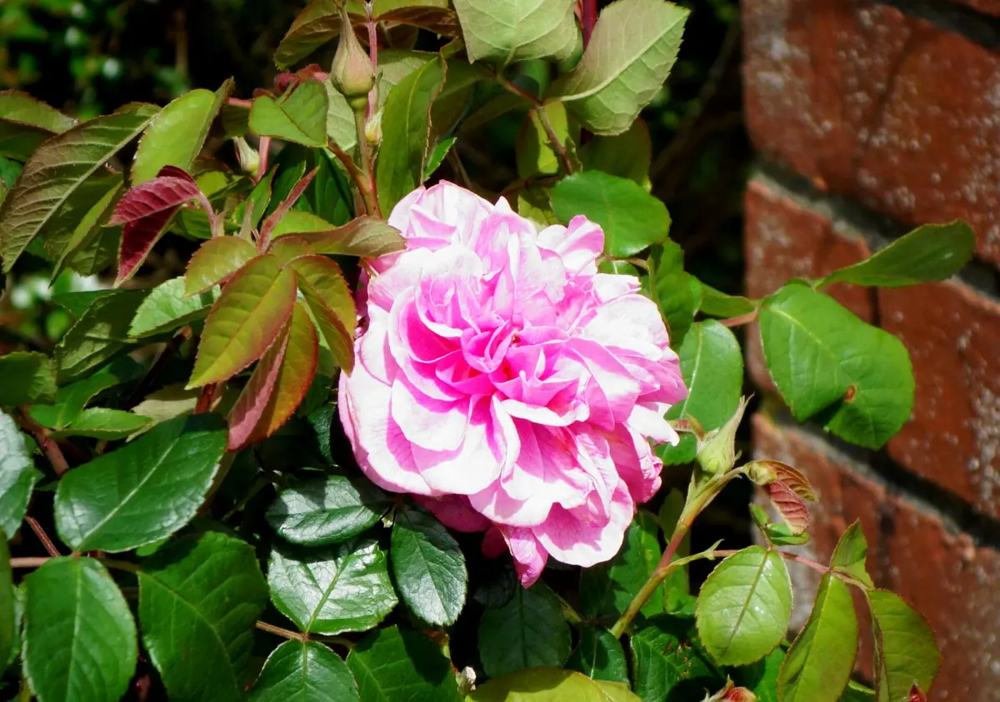
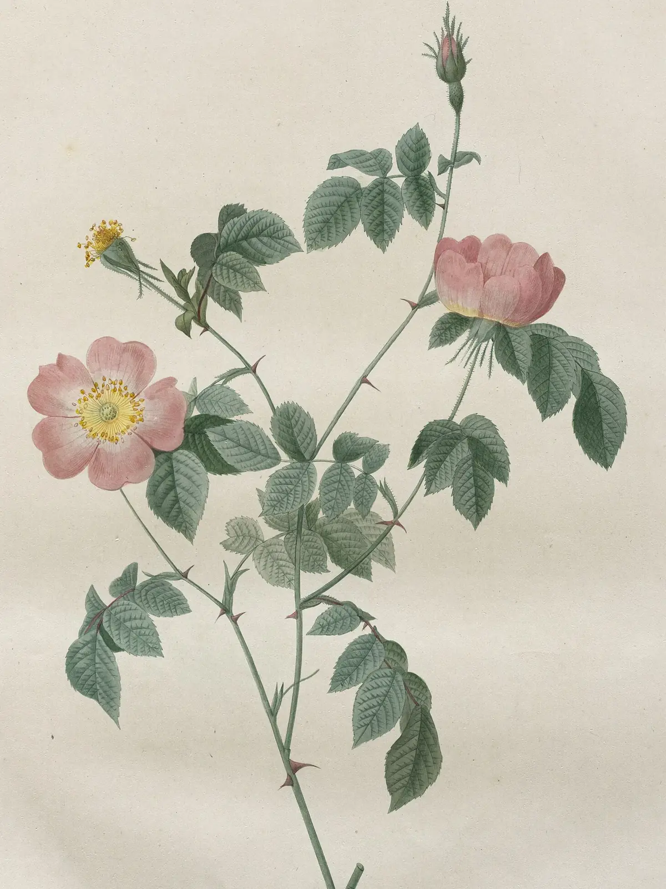
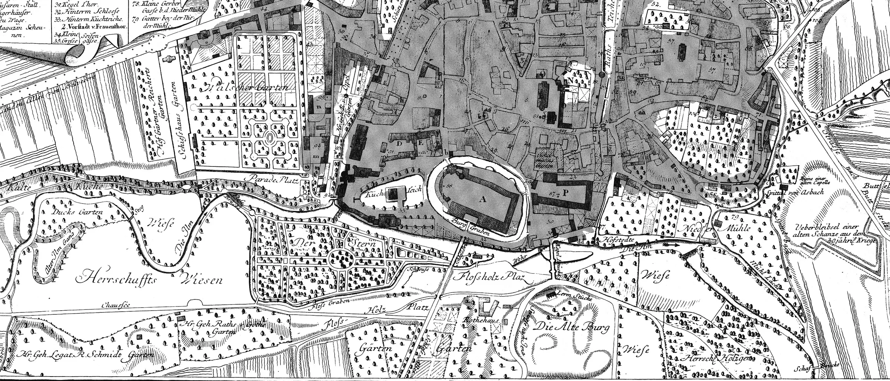
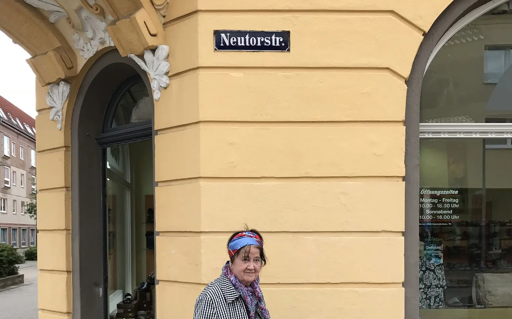
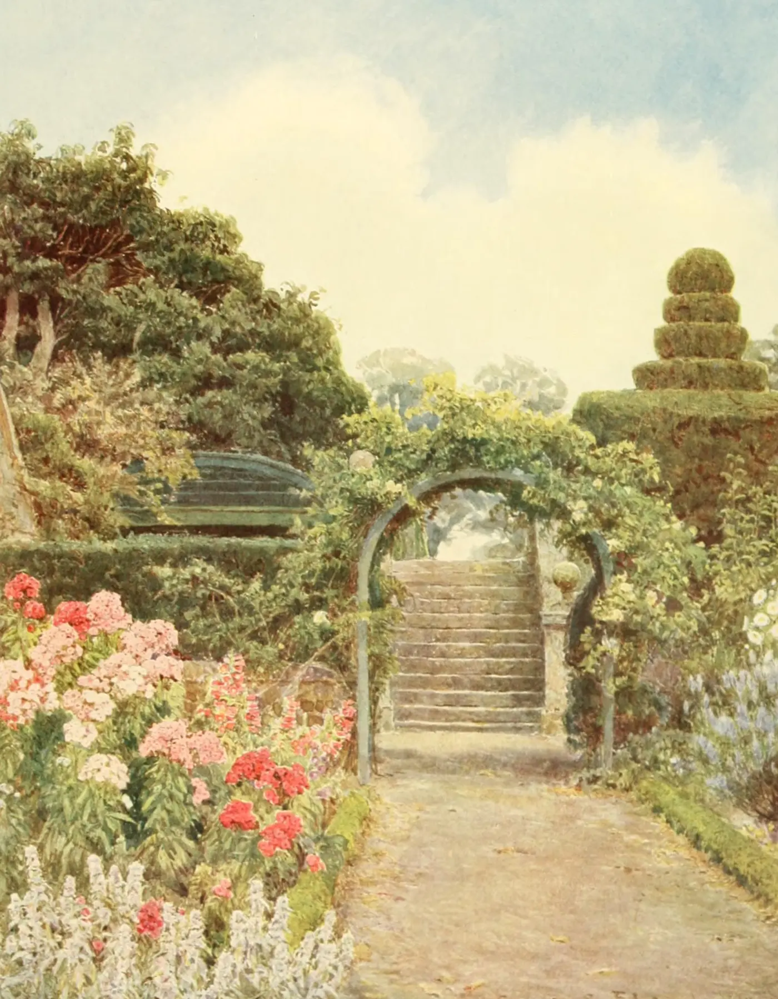
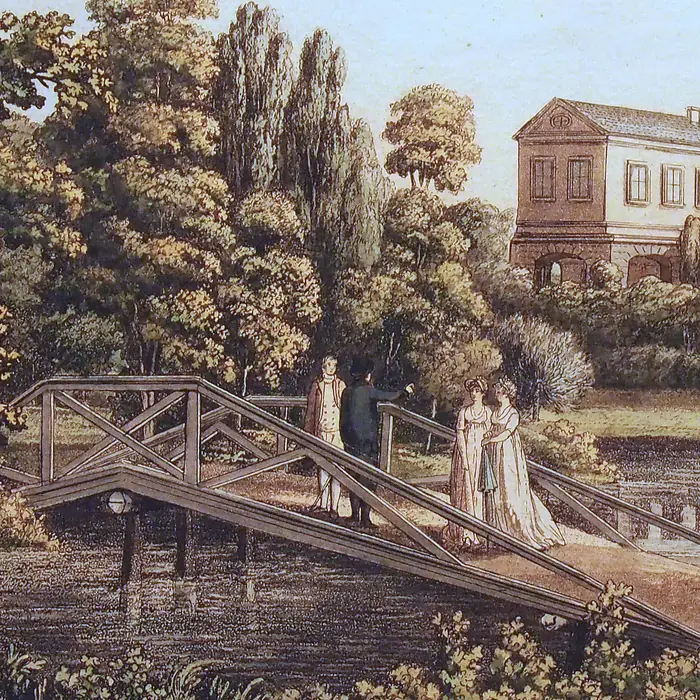

Ingrid und Wolfgang Timpel
Lebensbericht, Gedichte und Fotografien einer Weimarer Familie, aufgeschrieben von Ingrid Timpel.
Den Lebensbericht lesen

Ein Garten aus Erinnerungen
Ingrid Timpel schreibt seit vielen Jahren auf, was sie erlebt: Tag für Tag, in Versen und in einem Bericht über ihr Leben.
Wolfgang Timpel war Restaurator und Archäologe in Weimar. Er setzte zusammen, was in Scherben aus der Erde kam.

Ingrid Timpel
Geboren in Neubrandenburg, zu Hause in Weimar. Ingrid Timpel hält fest, was sie erlebt hat, damit es nicht verloren geht: in Tagesnotizen, in Gedichten und in einem langen Bericht über ihr Leben.

Im Frühjahr 1945 flieht sie als Kind mit der Mutter und den Geschwistern aus Neubrandenburg, im offenen Güterwagen über Güstrow bis nach Lübeck. Davon erzählt ihr Lebensbericht.
- Geboren in
- Neubrandenburg
- Frühjahr 1945
- Flucht nach Lübeck
- Zu Hause in
- Weimar
- Schreibt
- Notizen, Gedichte, Lebensbericht

Englische Rosen
Sah ein Knab’ ein Röslein stehn,
Röslein auf der Heiden,
War so jung und morgenschön,
Lief er schnell, es nah zu sehn,
Sah’s mit vielen Freuden.
Röslein, Röslein, Röslein rot,
Röslein auf der Heiden.
Der Park an der Ilm in Weimar wurde nach englischem Vorbild angelegt: geschwungene Wege, freie Wiesen, Rosen an Bögen und Mauern. Solche Gärten sind das Bild dieser Seite.


Aus den Fotoalben
Kindheit und Jugend, die Kriegszeit, gemeinsame Jahre, Restaurierung und Museum und Ingrids Zeichnungen.


Wolfgang Timpel, 1935 bis 2024
Geboren in Weimar. Mit siebzehn kam er an das Museum für Ur- und Frühgeschichte Thüringens und lernte dort Restaurator. Später leitete er Ausgrabungen, unter anderem am Erfurter Dom, kümmerte sich um die Bodendenkmale Thüringens und wurde 1992 promoviert. Er starb am 3. Juni 2024.
Mehr über Wolfgang Timpel
| 1972 | Die ur- und frühgeschichtlichen Befestigungen des Kreises Mühlhausen, mit Paul GrimmMühlhausen |
| 1975 | Ergebnisse archäologischer Untersuchungen auf der Hasenburg bei HaynrodeBerlin |
| 1982 | Gommerstedt, ein hochmittelalterlicher Herrensitz in ThüringenWeimar |
| 1986 | Archäologische Untersuchungen auf der Wüstung Hugenworbis, mit Harald ReußeEichsfelder Heimathefte |
| 1990 | Die mittelalterliche Keramik der KyffhäuserburgenBerlin |
| 1995 | Die früh- und hochmittelalterliche Keramik im westlichen ThüringenStuttgart |
| 1999 | Thüringer. Hauswerk und HandwerkStuttgart |
| 2014 | Der Stiftsberg in Heiligenstadt, mit Roland AltweinAlt-Thüringen |
| 2014 | Corpus archäologischer Quellen des 7. bis 12. Jahrhunderts in Thüringen, mit Ines SpazierLangenweißbach |
Sie möchten Ingrid Timpel schreiben oder eine Erinnerung teilen? Sie freut sich über Post.
